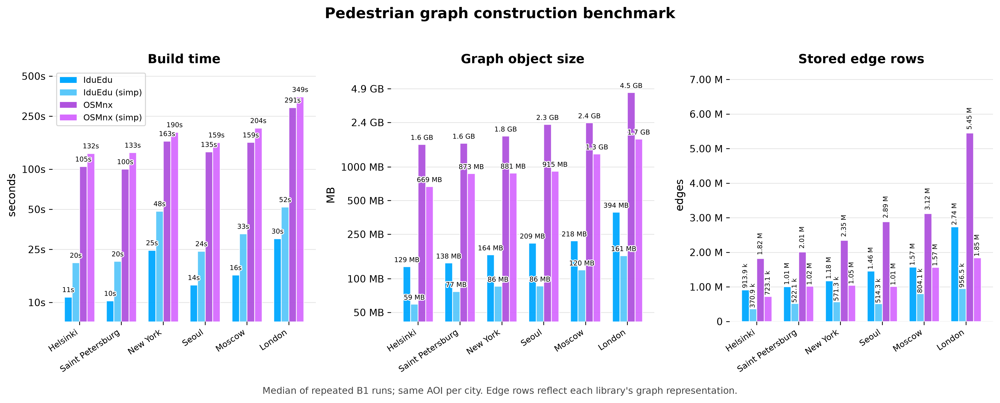

Бенчмарки и устройство¶
IduEdu задумана как единый конвейер на Python для анализа городских сетей: извлечение данных OpenStreetMap, построение графов, интеграция общественного транспорта и большие расчёты корреспонденций используют одну модель данных UrbanGraph. Набор бенчмарков статьи 2026 года в paper2026/ измеряет эти этапы по исходным CSV-результатам, с повторными запусками и медианными значениями.
Приведённые ниже числа — не общий рейтинг геопространственных библиотек. OSMnx остаётся зрелым и широко используемым инструментом для анализа уличных сетей. Это сравнение выделяет одну типичную задачу: построение пешеходного графа для одних и тех же областей интереса масштаба города, с simplify=False и simplify=True в IduEdu и OSMnx.

Что добавляет IduEdu¶
UrbanGraph: табличное представление графа на основе таблиц узлов и рёберGeoDataFrame.Матрица смежности CSR, которая строится по требованию прямо из таблицы рёбер и повторно используется процедурами кратчайших путей.
Построение автомобильных и пешеходных уличных графов по OSM в метрической проекции с необязательным упрощением.
Построение статического графа общественного транспорта прямо по отношениям OSM, без GTFS. Отдельная функция построения по GTFS есть, но в приведённый бенчмарк она не входит.
Построение интермодального графа проецированием остановок, платформ и входов в метро на пешеходный граф.
Расчёт OD-матриц на ядрах CSR на Numba с порогами отсечения и адаптивным обращением графа.
Необязательные адаптеры NetworkX для совместимости, без использования NetworkX как внутреннего представления графа.
Построение пешеходного графа¶
Бенчмарк B1 сравнивает время построения графа, число хранимых строк рёбер и детерминированную оценку размера объектов итогового геопространственного представления графа в памяти. Для IduEdu оценка охватывает таблицы узлов и рёбер GeoDataFrame в UrbanGraph и буферы координат геометрий Shapely. Для OSMnx — словари, атрибуты, геометрии и буферы координат возвращаемого networkx.MultiDiGraph. Это не пиковый объём памяти процесса (RSS) во время построения.
Без упрощения преимущество IduEdu по времени в этой задаче наибольшее: OSMnx работает в 6,6–10,0 раза дольше в проверенных городах, медианное соотношение — 9,7 раза. С упрощением соотношение составляет 3,9–6,7 раза при медиане 6,5 раза. В обоих режимах детерминированная оценка размера итогового представления графа примерно в 10–12 раз меньше.
Строки слегка выделены цветом по режиму упрощения. Соотношения — OSMnx / IduEdu.
| Simplify | City | Build time | Graph object size | Stored edge rows | |||||
|---|---|---|---|---|---|---|---|---|---|
| IduEdu | OSMnx | Ratio | IduEdu | OSMnx | Ratio | IduEdu | OSMnx | ||
| false | Helsinki | 11.0 s | 104.8 s | 9.5x | 129 MB | 1.6 GB | 12.4x | 913.9k | 1.82M |
| Saint Petersburg | 10.3 s | 100.1 s | 9.7x | 138 MB | 1.6 GB | 11.8x | 1.01M | 2.01M | |
| New York | 24.6 s | 162.8 s | 6.6x | 164 MB | 1.8 GB | 11.6x | 1.18M | 2.35M | |
| Seoul | 13.5 s | 134.9 s | 10.0x | 209 MB | 2.3 GB | 11.5x | 1.46M | 2.89M | |
| Moscow | 16.1 s | 159.0 s | 9.9x | 218 MB | 2.4 GB | 11.4x | 1.57M | 3.12M | |
| London | 30.2 s | 290.5 s | 9.6x | 394 MB | 4.5 GB | 11.8x | 2.74M | 5.45M | |
| true | Helsinki | 19.9 s | 131.6 s | 6.6x | 59 MB | 669 MB | 11.3x | 370.9k | 723.1k |
| Saint Petersburg | 20.3 s | 133.2 s | 6.5x | 77 MB | 873 MB | 11.3x | 522.1k | 1.02M | |
| New York | 48.5 s | 189.7 s | 3.9x | 86 MB | 881 MB | 10.3x | 571.3k | 1.05M | |
| Seoul | 24.3 s | 158.9 s | 6.6x | 86 MB | 915 MB | 10.6x | 514.3k | 1.01M | |
| Moscow | 32.8 s | 203.8 s | 6.2x | 120 MB | 1.3 GB | 10.9x | 804.1k | 1.57M | |
| London | 52.0 s | 348.9 s | 6.7x | 161 MB | 1.7 GB | 11.0x | 956.5k | 1.85M | |
Число рёбер следует понимать как число хранимых строк рёбер в каждом представлении, а не как самостоятельный показатель качества. UrbanGraph может хранить двунаправленное пешеходное ребро одной строкой со столбцом направления, тогда как ориентированный мультиграф обычно хранит отдельные строки для каждого направления.
Методика¶
Все измерения B1 используют одну и ту же область интереса для каждого города. Набор бенчмарков скачивает файлы PBF, берёт ограничивающий прямоугольник PBF и использует его как область интереса для каждой библиотеки. Каждое измерение повторяется не менее трёх раз, в документации приведены медианы.
Окружение, записанное для запуска B1:
Процессор: рабочая станция Intel Core i7-12700F, 64 ГБ ОЗУ.
Платформа: семейство Windows 10 / Windows 11.
Python: 3.11.9.
IduEdu: 2.0.0.
OSMnx: 2.1.1.
NetworkX: 3.6.1.
GeoPandas: 1.1.4.
Shapely: 2.1.2.
Исходные результаты и снимки окружения хранятся в:
paper2026/results/build_benchmark.csvpaper2026/results/intermodal_benchmark.csvpaper2026/results/od_benchmark.csvpaper2026/results/env_build.json
OD-матрицы¶
IduEdu рассчитывает OD-матрицы прямо на представлении графа, которое строят её функции. Матрица смежности CSR строится из UrbanGraph.edges_gdf, кешируется и передаётся ядрам Numba без преобразования графа в формат другой библиотеки.
Для расчётов доступности важны два механизма:
Пороги отсечения останавливают поиск Дейкстры, как только превышен порог времени в пути или расстояния.
Адаптивное обращение графа меняет местами точки отправления и назначения на транспонированном графе, когда
|origins|намного больше|destinations|, и тем самым сокращает число запусков поиска кратчайших путей.
Бенчмарк статьи сверяет результаты OD с NetworkX на одинаковом графе: множества достижимости совпадают, а максимальная конечная разница составляет около 3e-4 минуты, что объясняется арифметикой float32 в ускоренном ядре по сравнению с эталоном на float64.
Ограничения¶
Граф общественного транспорта в этих бенчмарках статический и построен по OSM. Он не моделирует расписания, интервалы движения и зависящее от времени ожидание. Необязательная функция построения по GTFS оценивает статическое ожидание посадки по выбранному окну расписания, но и она не является точным маршрутизатором по расписанию с учётом времени.
Преимущества по бенчмаркам сильнее всего проявляются на больших городских графах и пакетных расчётах, таких как OD-матрицы, доступность от многих источников и повторяющийся пространственный анализ. Для разовых запросов маршрута специализированные движки маршрутизации могут оставаться верным выбором, особенно когда нужна маршрутизация по расписанию или с учётом стоимости поворотов.